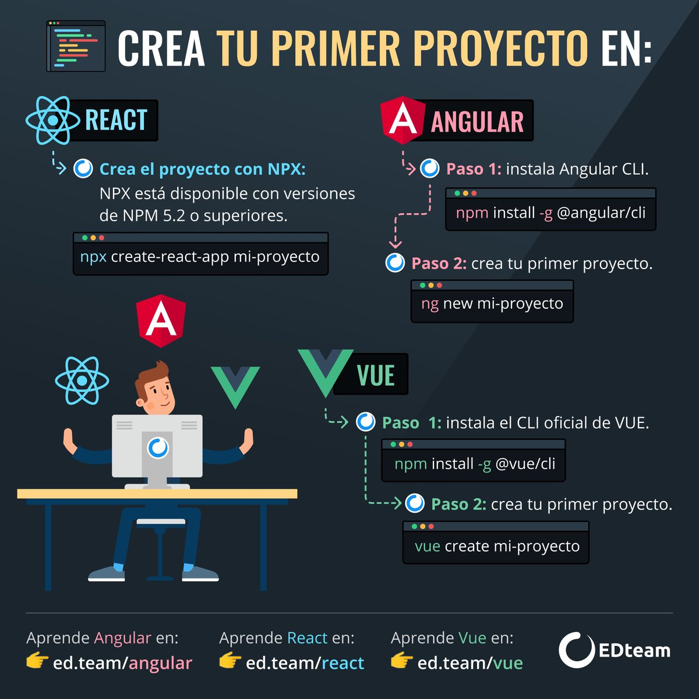

CV de Luis Fernández
C# Developer
Desarrollador Jr con experiencia no mas de 1 año y medio en desarrollo de aplicaciones de escritorio con .NET
Educación
- Ingenieria en Tecnologías de la Información
- 2015-2018 - Universidad Tecnologica del Sureste de Veracruz

Experiencia Profesional
- Desarrollador C#
- 2019-Actual. Desarrollo de aplicaciones de escritorio para la empresa y clientes asi como reportes en excel vba.
Premios
- 1er Lugar en LANZA-T en Nanchital, Ver
- 2017
Otros
- Autodidacta por defecto
- Encantado con la enseñanza en plataformas de enseñanza online